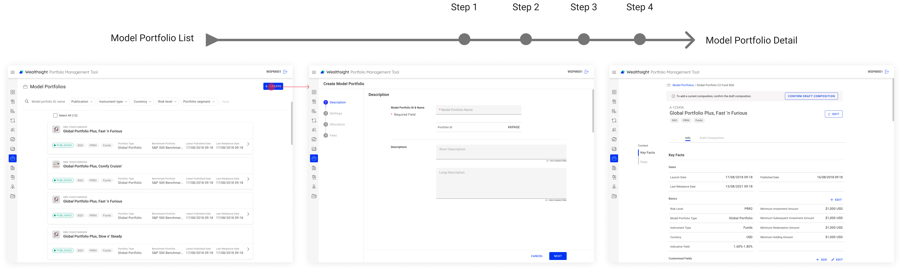
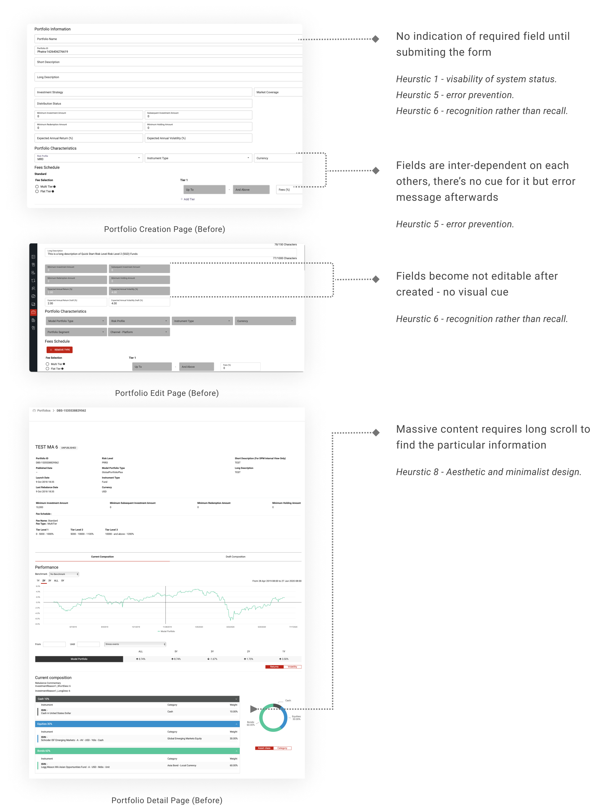
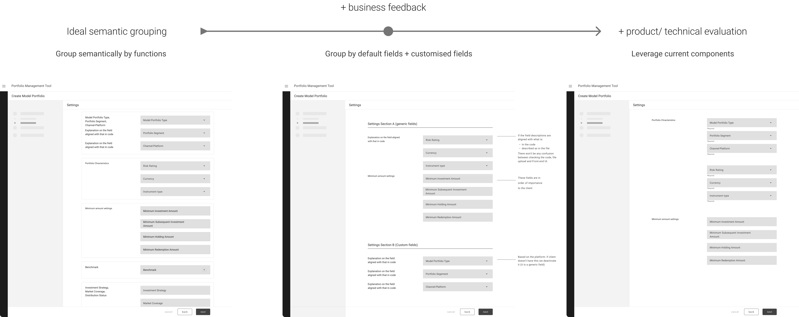

Intro
Portfolio managers, financial advisors and individual investors use the user account dashboard to review their investment performance, portfolio allocation and add/manage portfolios.
1. Why redesign?
Portfolio creation involves complex compliance checks and knowledges of the platform technology, it is hard to understand how fields work to create/view a portfolio with current design. Even internal staff often get confused. To better demostrate the portfolio management tool's capability to potential clients in an understandable manner, management and product team decieded overhaul the portfolio creation journey and the way the information is displayed.
2. How to identify problems without contact to users?
//Heuristic Evaluation. With limited resources for user research, I conducted a heuristic/expert evaluation by walking through the creation/view flow following the Nelson’s 10 heuristic guidelines.
3.What’re the problems?
4. Ideation - Audit, Mapping, Desktop Research
I audited the existing platforms, initiated stakehoder interviews with product owner, technical team to understand the logic and constraints and review the solution with product and fron-end team to evaluate the business value and feasibility.

5. Solutions - wireframes / stakeholder review
I used wireframes to explore different ways to structure information semantically to make it more readable. Although, after several reviews iterations, considering our business strategy is to sell the generic platform with minimum customization for each clients, also existing clients have been used to the pattern for years, we didn’t go for the more disruptive structure for portfolio detail page. But we will reference the standard pattern which industry commonly use to organise portfolio information to design creation steps.
Wireframes / IA
Refined & Iterated design

6. Result - New client onboard after
After the overhauled creation flow deployed, clients have no compaints about it, which is not usual. Although we can hardly say all credits go to this single module redesign, but we got a new client onboard after that.>